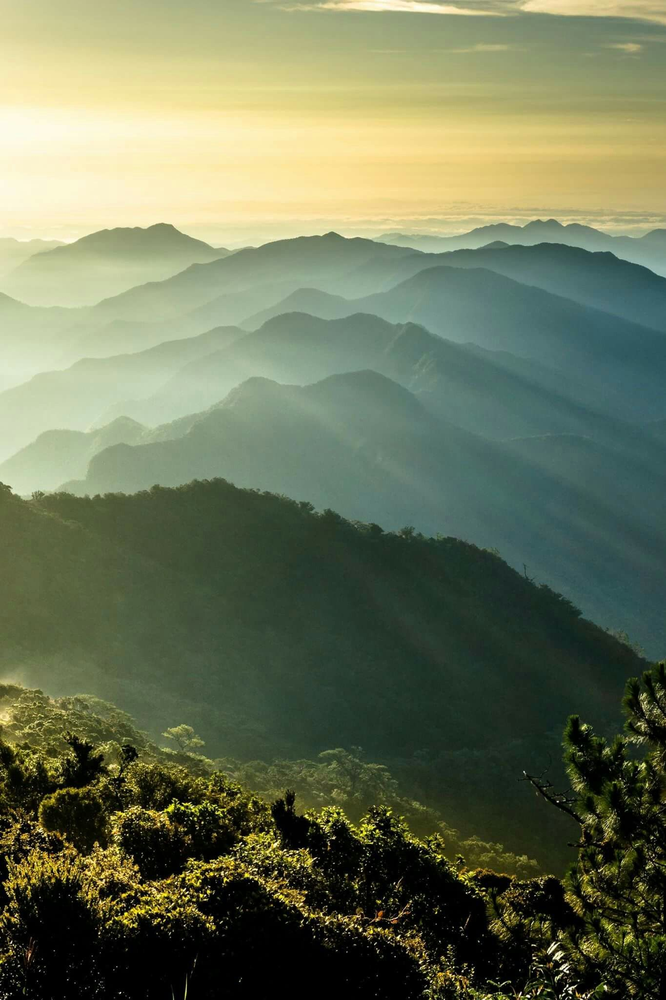

The conservation and sustainable use of mountain
ecosystems are crucial aspects of global
sustainability efforts, as outlined in the 2030
Agenda for Sustainable Development and other
international agreements. Mountains play a vital
role in providing essential resources such as water,
energy, biodiversity, and key resources like
minerals, forest products, and agricultural goods.
Additionally, they serve as recreational areas
and are integral to the survival of the global
ecosystem.
Biodiversity Conservation in Mountain Ecosystems
Mountains are often referred to as "water towers" because
they supply freshwater to a significant portion of the
world's population. Their role in regulating water cycles
and providing clean water for drinking, agriculture, and
industry underscores their importance in sustaining life on
Earth. Furthermore, mountain ecosystems harbor a rich
biodiversity, including unique species adapted to high
altitudes, making them hotspots of ecological
significance.

Social and Economic Impacts of Mountain Conservation:
The conservation of mountain ecosystems is not only
essential for environmental reasons but also for social and
economic development. Many communities, including indigenous
peoples and local populations, rely directly on mountain
resources for their livelihoods. Sustainable management of
these resources ensures their long-term availability while
supporting the well-being of these communities.
Challenges and Collaborative Solutions for Mountain
Conservation:
Moreover, mountains face various challenges, including
climate change impacts, deforestation, land degradation, and
natural disasters. These threats highlight the vulnerability
of mountain ecosystems and the urgent need for conservation
and sustainable practices. Collaborative efforts involving
governments, stakeholders, and local communities are crucial
in addressing these challenges and implementing effective
conservation measures for mountain areas worldwide.